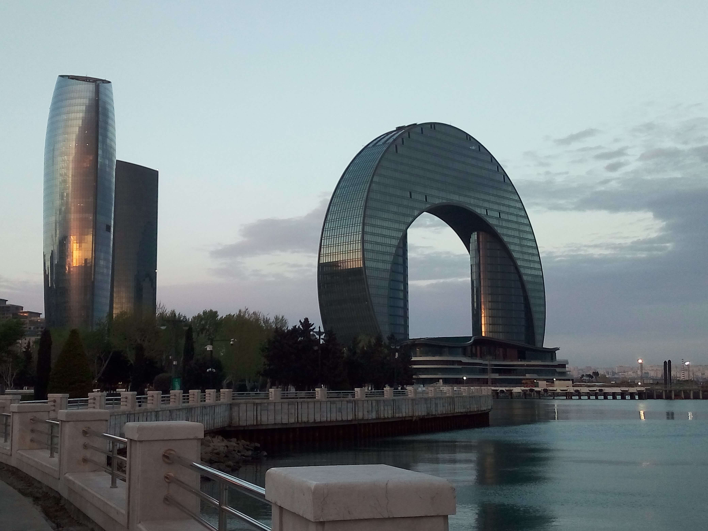
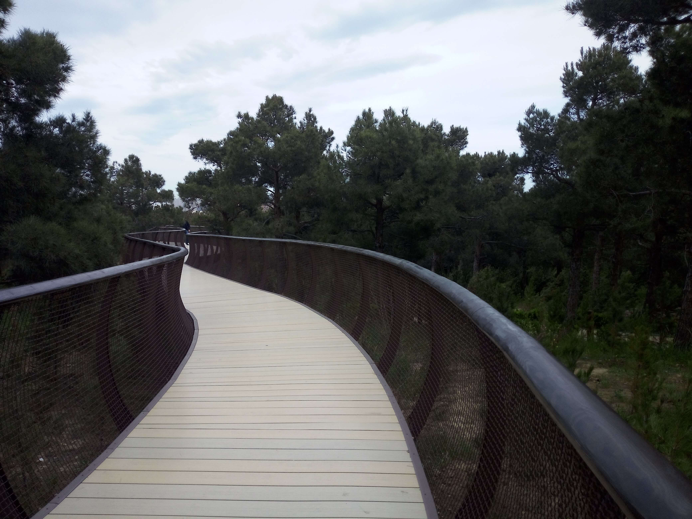
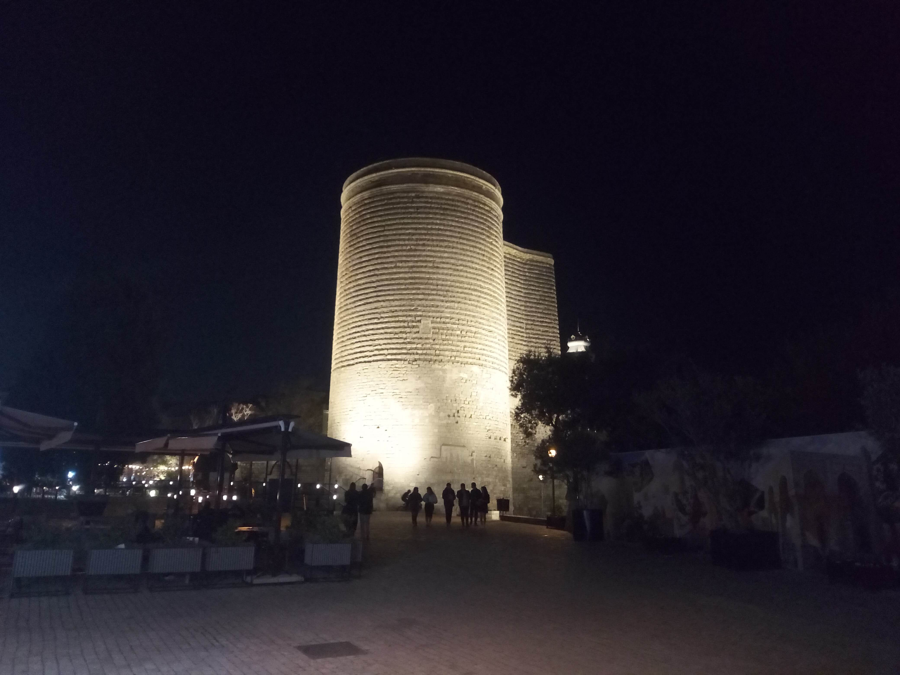
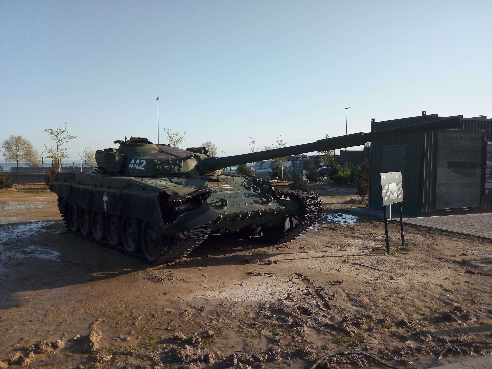
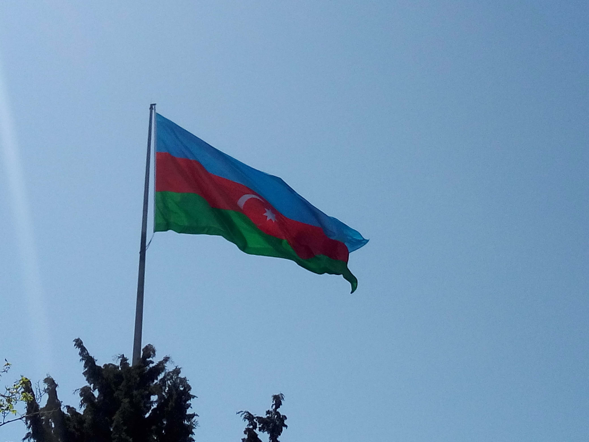
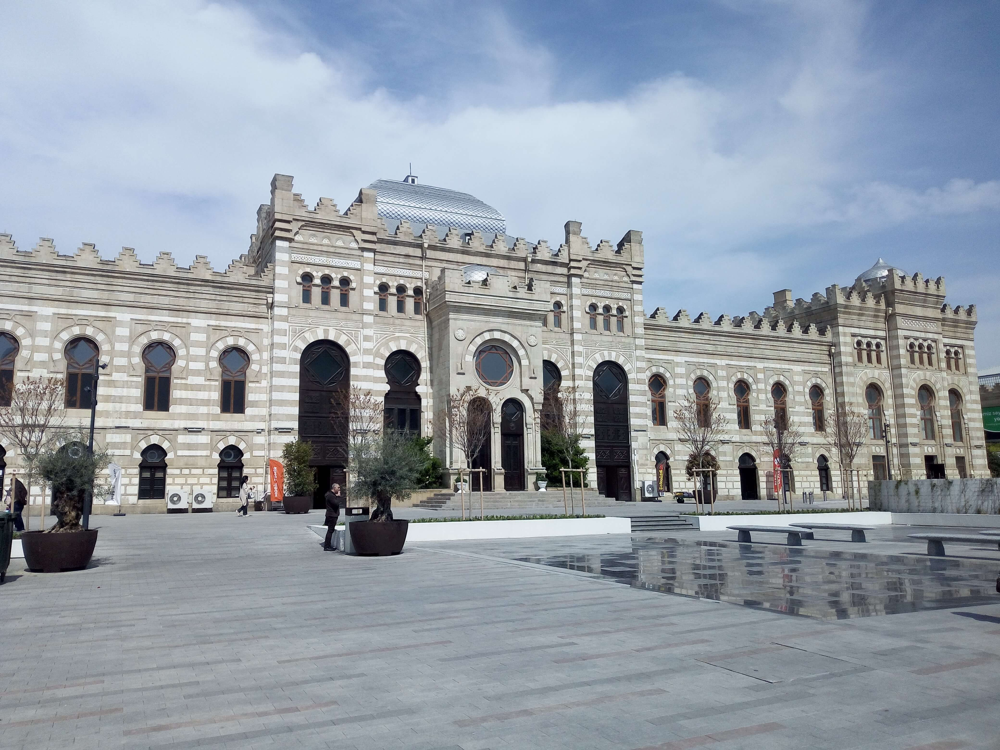
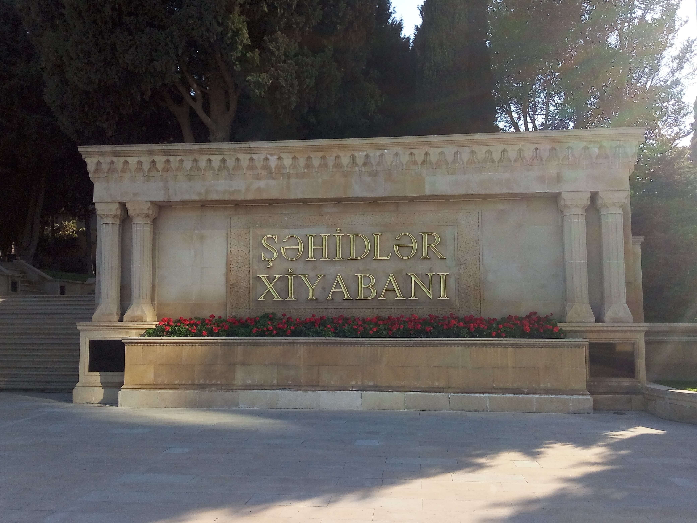

Baku
Baku, the capital of Azerbaijan, is a fascinating city where historic architecture, modern landmarks, and the shores of the Caspian Sea come together. Its character reflects a unique blend of Eastern traditions and European influences. The historic Old City, with its narrow streets, ancient walls, and traditional buildings, offers a glimpse into the city's rich past. Beyond its historic center, Baku is known for its impressive skyline, waterfront promenade, museums, gardens, and cultural landmarks. The contrast between its historic architecture and modern developments gives the city a distinctive atmosphere. This collection brings together my personal photographs and memories from different corners of Baku, capturing its architecture, landscapes, and cultural character.

Cityscape & Views
Panoramic views of Baku, its distinctive skyline, Caspian Sea waterfront, and the contrast between historic architecture and modern landmarks.
Explore Photos ↗
Central Botanical Garden
A peaceful green space featuring diverse plant life, landscaped areas, and quiet paths away from the busy streets of the city.
Explore Photos ↗
Old City
The historic heart of Baku, known for its ancient walls, narrow streets, traditional buildings, and remarkable architectural heritage.
Explore Photos ↗
Military Trophies Park
A park presenting military exhibits and displays, offering a particular perspective on Azerbaijan's recent history and national commemorations.
Explore Photos ↗
National Flag Museum
A cultural institution dedicated to the history and symbolism of Azerbaijan's national flag and state identity.
Explore Photos ↗
Railway Museum
A place to explore railway heritage, historic transport displays, and the development of railway connections in Azerbaijan.
Explore Photos ↗
Alley of Martyrs
A significant memorial site overlooking the Caspian Sea, commemorating those who lost their lives in important events in Azerbaijan's history.
Explore Photos ↗